Probability Refresher, Bayesian Updating
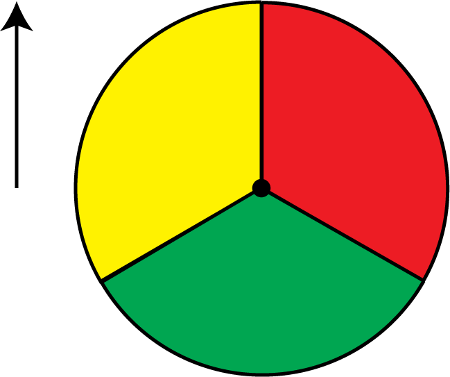
Sum rule
If \(A\) and \(B\) are subsets of \(\Omega\) with no elements in common, then \[
P(A\cup B)=P(A) + P(B).
\]
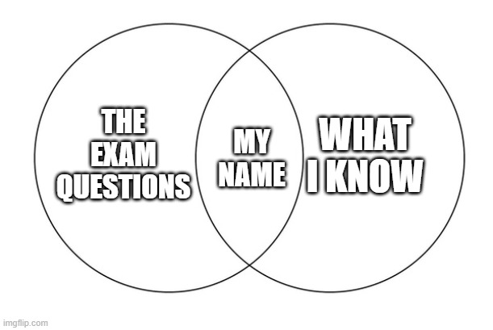
Product rule
\(A\) and \(B\) are independent if
\[
P(A\cap B)=P(A)P(B).
\]
E.g., the prob. of simultaneously tossing tails on a coin and rolling six on a die is \(\frac{1}{2}\times\frac{1}{6} = \frac{1}{12}.\)
Conditional probability
\[
P(A\mid B)=\frac{P(A\cap B)}{P(B)},\qquad P(B)>0.
\]
Consider the following statement:
“One third of sports injuries in Germany are football-related. No other sport generates so many injuries. Therefore, football is the most dangerous sport”
The line of argument is: (i) \(\small P(\text{Sport}|\text{Injury})\) is maximal for \(\small \text{Sport = Football}.\) (ii) Therefore, \(\small P(\text{Injury}|\text{Sport})\) is maximal for \(\small\text{Sport = Football}.\) But (ii) does not necessarily follow from (i)!
Suppose that this is the true joint distribution of sports activity and injuries:
| Play football | Play other sport | |
|---|---|---|
| Injury | 3.3% | 6.7% |
| No injury | 45% | 45% |
Suppose that this is the true joint distribution of sports activity and injuries:
| Play football | Play other sport | |
|---|---|---|
| Injury | 3.3% | 6.7% |
| No injury | 45% | 45% |
Suppose that this is the true joint distribution of sports activity and injuries:
| Play football | Play other sport | |
|---|---|---|
| Injury | 3.3% | 6.7% |
| No injury | 45% | 45% |
Suppose that this is the true joint distribution of sports activity and injuries:
| Play football | Play other sport | |
|---|---|---|
| Injury | 3.3% | 6.7% |
| No injury | 45% | 45% |
Bayes’ theorem. If \(A\) and \(B\) are subsets of \(\Omega\) and \(P(A),P(B)>0,\) then
\[
P(A\mid B)=\frac{P(A)\;P(B\mid A)}{P(B)}.
\]
This is an implication of the cond. probability definition. We know: \[ \small P(A|B) = \frac{P(A\cap B)}{P(B)},\, P(B|A) = \frac{P(B\cap A)}{P(A)}. \]
This is an implication of the cond. probability definition. We know: \[ \small P(A|B) = \frac{P(A\cap B)}{P(B)},\, P(B|A) = \frac{P(B\cap A)}{P(A)}. \]
Plug these definitions into Bayes’ theorem and confirm that the rhs is equal to the lhs: \[ \small \frac{P(A\cap B)}{P(B)} = \frac{P(B\cap A)}{P(A)}\frac{P(A)}{P(B)} \Rightarrow P(A\cap B) = P(B\cap A). \]
Consider the following example of a medical test.
Sasha gets screened for a rare medical condition that around 1 in 1000 people in Sasha’s demographic have.
The test identifies a sick person as sick with 99%.
The test identifies a healthy person as healthy with 98%.
The test result is positive. What’s the probability that Sasha has the medical condition?
Martingale Property (Law of Iterated Expectations)
\[ \small \mathbb{E}\left[\mathbb{E}[\omega | B]\right]=\mathbb{E}[\omega]. \]
Conditioning then averaging returns the unconditional mean.
Implication. I cannot expect to change my expectation in any particular direction in the future.
Law of Iterated Expectations (Martingale Property)
\[ \small \mathbb{E}\left[\mathbb{E}[\omega | B]\right]=\mathbb{E}[\omega]. \]
E.g., denote tomorrow’s expected temperature by \(\mathbb{E}[T].\) This expectation might change depending on a future weather report, \(\mathbb{E}[T|\text{weather rep.}].\) However, not knowing the future weather report, \(\mathbb{E}[\mathbb{E}[T|\text{weather report}]] = \mathbb{E}[T].\)
I cannot expect that listening to the weather report will make me more optimistic about tomorrow’s weather.
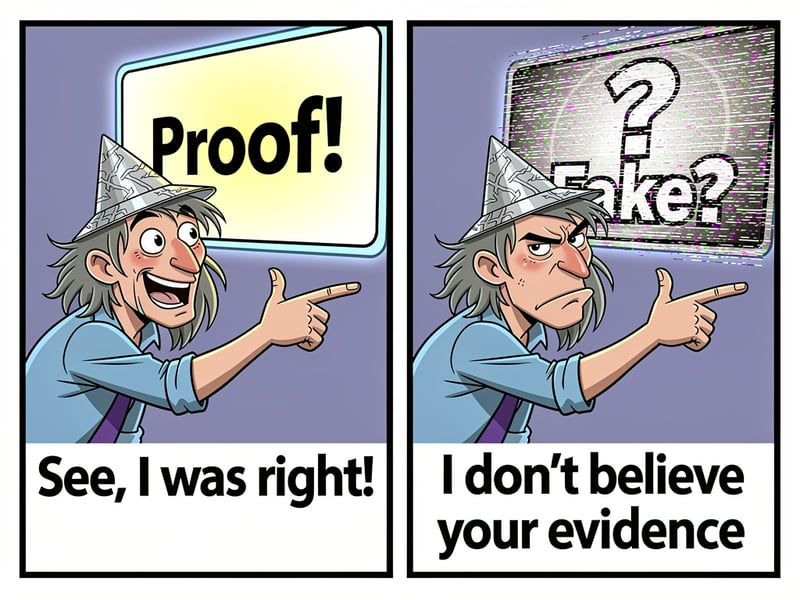
\(\uparrow\) Inconsistent with martingale property
This model has a binary state, \(\Omega=\{H,L\}\). In every period \(t\in\{1,2,\dots\},\) the agent receives a signal \(s_t\in\{g,b\}\) about the state. The signals are i.i.d. conditional on the state, and the agent’s belief at time \(t\) is denoted by \(P(H|s_1,\dots,s_t).\)
The model specifies the prior belief, \(P(H)=p_0\), and the signal precision. Use \(f^\omega(s)\) to denote the probability of signal \(s\) conditional on state \(\omega.\) Then, for example, \(f^H(g)=P(g|H)\) is the probability of receiving a good signal when the state is \(H.\)
By Bayes’ theorem, the agent’s belief after receiving signal \(s\) is: \[ P(H|s) = \frac{P(H)P(s|H)}{P(s)} \]
In the binary-binary model, the \(t=1\) posterior belief is \[ p_1 = \frac{p_0 f^H(s_1)}{p_0 f^H(s_1) + (1-p_0)f^L(s_1)}. \]
In the binary-binary model, the \(t=1\) posterior belief is \[ p_1 = \frac{p_0 f^H(s_1)}{p_0 f^H(s_1) + (1-p_0)f^L(s_1)}. \]
In \(t=2\), the \(t=1\) posterior belief becomes the new prior: \[ p_2 = \frac{p_1 f^H(s_2)}{p_1 f^H(s_2) + (1-p_1)f^L(s_2)}. \]
For general \(t\), beliefs follow a recursive structure: \[ p_t = \frac{p_{t-1} f^H(s_t)}{p_{t-1} f^H(s_t) + (1-p_{t-1})f^L(s_t)}. \]
Analogously, the belief in \(\omega=L\) is \[ 1 - p_t = \frac{(1-p_{t-1})f^L(s_t)}{p_{t-1} f^H(s_t) + (1-p_{t-1})f^L(s_t)}. \]
We can rewrite the updating rule in terms of the likelihood ratio (LR): \[ \lambda_t \equiv \ln\left(\frac{p_t}{1-p_t}\right) = \lambda_0 + \gamma \ln\left(\frac{f^H(g)}{f^L(g)}\right) + \beta \ln\left(\frac{f^H(b)}{f^L(b)}\right), \] where \(\gamma\) and \(\beta\) are the number of good and bad signals received up to time \(t.\)
Proposition. In the binary-binary model, posterior beliefs converge to the truth as the number of signals grows to infinity.
(Proof on board)
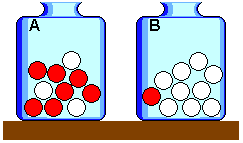
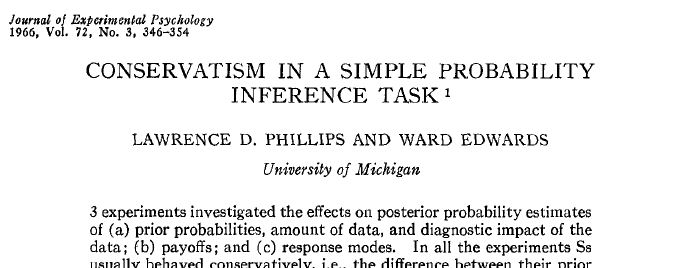
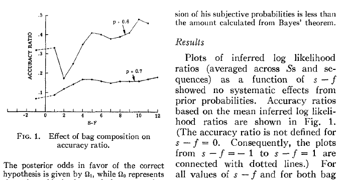
Benjamin (2019) provides a meta-analysis summarizing more than 50 years of research.
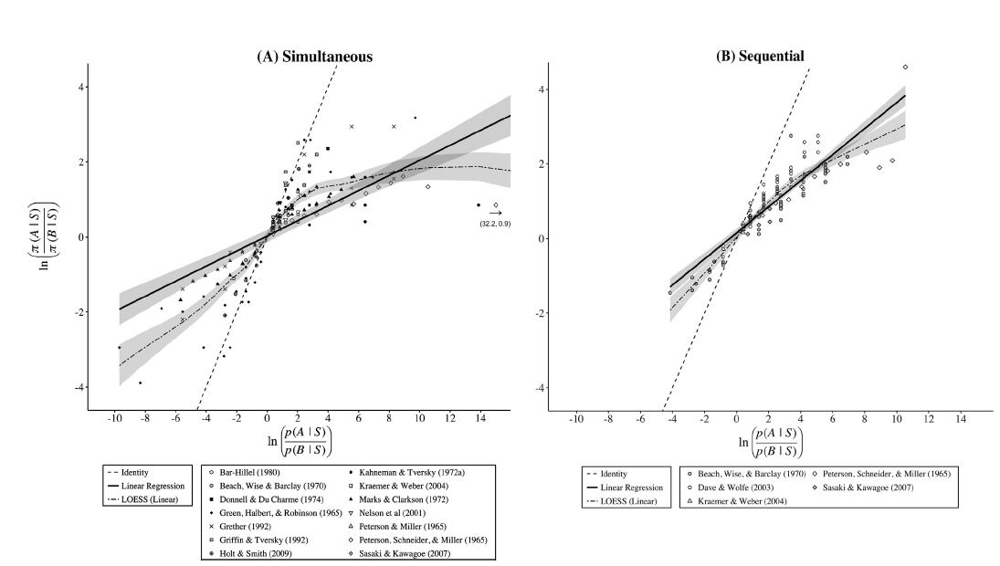
Definition. Belief movement \(M\) denotes by how much beliefs change between the evaluation periods 1 and 2: \[ M = (p_2 - p_1)^2. \]
Definition. Uncertainty reduction \(R\) denotes the reduction in belief variance between periods 1 and 2: \[ R = p_1(1-p_1) - p_2(1-p_2). \]
A&R observe the following result:
Proposition. If \(\mu_t\) is a probability measure, then \(\mathbb{E}[M] = \mathbb{E}[R].\)
This is a direct consequence of the martingale property.
(Proof on board)
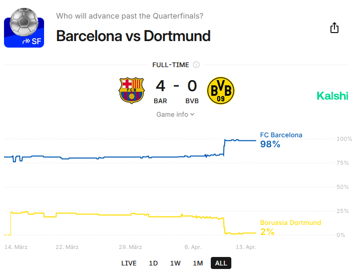
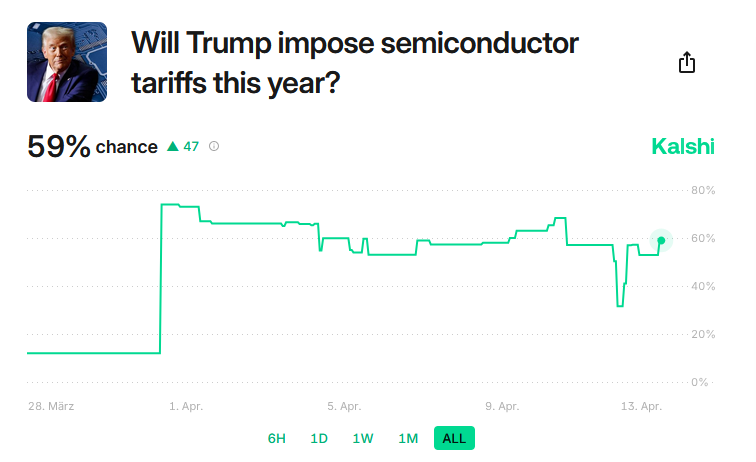
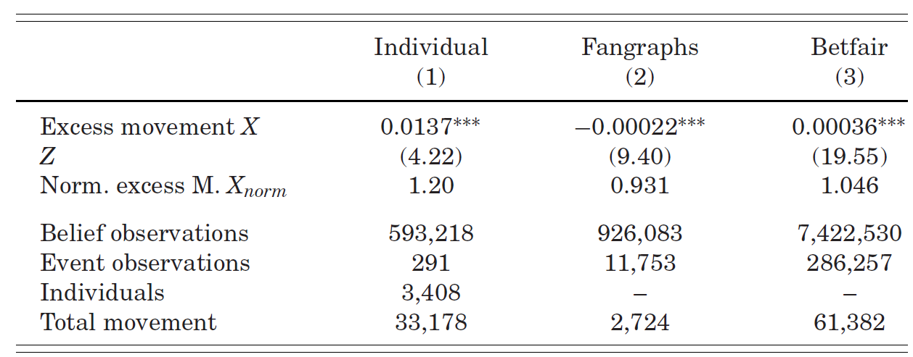
Augenblick, Lazarus, Thaler (QJE, 2025) study why individuals sometimes over- and sometimes underinfer from data.
Idea: Distinguishing good news from bad news is often easy. It is much harder to say how much better one piece of good news is to another piece.
In other words, a signal’s qualitative valence (\(+\) or \(-\)) is easier to assess than the quantitative size of the signal.
ALT conduct a lab belief updating experiment and find overinference if the signal precision is below \(0.6\) and underinference if the signal precision is above \(0.6.\)
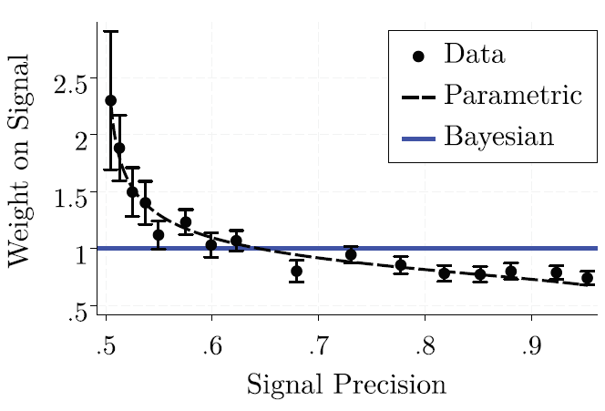
- The y-axis is normalized. y>1 means overinference and y<1 means underinference.ALT also aim for a test of reactions towards weak and strong signals in sports betting and financial markets.
They propose that, in sports, news that are revealed early in the game are less informative about the game outcome than equivalent news revealed later.
Based on this, they predict that belief movement > uncertainty reduction early in the game and belief movement < uncertainty reduction late in the game.
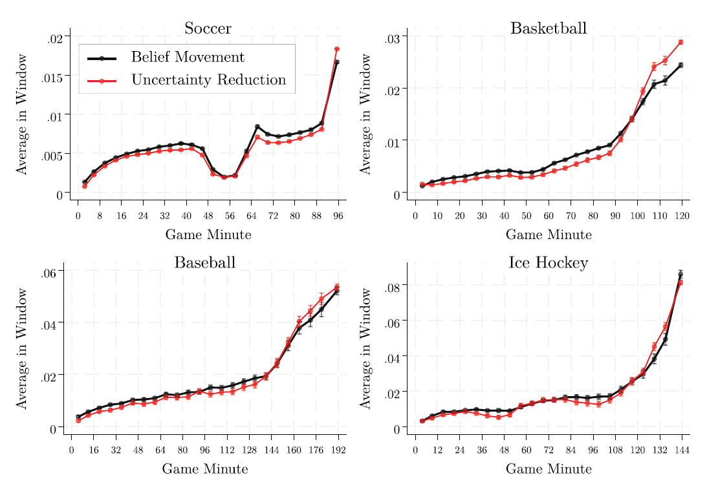